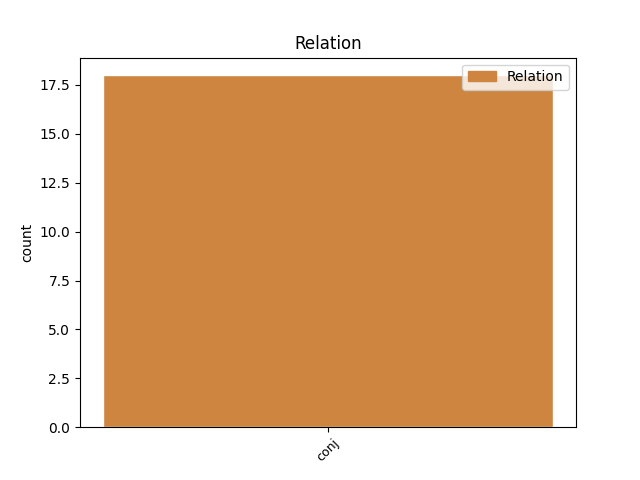
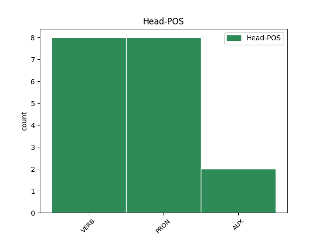
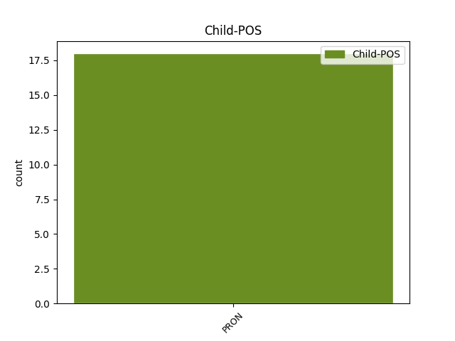

Distribution of features within this leaf



Agreement Rules sorted by frequency.
- When the dependent token is the conjunct(conj) of the head token, and the dependent token is PRON.
1 Totéž _ _ _ _ 0 _ _ _
2 platí _ _ _ _ 0 _ _ _
3 i _ _ _ _ 0 _ _ _
4 pro _ _ _ _ 0 _ _ _
5 ostatní _ _ _ _ 0 _ _ _
6 psychiatrické _ _ _ _ 0 _ _ _
7 pojmy _ _ _ _ 0 _ _ _
8 : _ _ _ _ 0 _ _ _
9 ty _ _ _ _ 0 _ _ _
10 imbecile _ _ _ _ 0 _ _ _
11 , _ _ _ _ 0 _ _ _
12 ty ty PRON PP-S5--2------- Case=Voc|Number=Sing|Person=2|PronType=Prs 0 _ _ _
13 idiote _ _ _ _ 0 _ _ _
14 , _ _ _ _ 0 _ _ _
15 ty ty PRON PP-S5--2------- Case=Voc|Number=Sing|Person=2|PronType=Prs 12 conj _ _
16 hysteriku _ _ _ _ 0 _ _ _
17 apod _ _ _ _ 0 _ _ _
18 . _ _ _ _ 0 _ _ _
Disagree Examples:
1 1 _ _ _ _ 0 _ _ _
2 . _ _ _ _ 0 _ _ _
3 období _ _ _ _ 0 _ _ _
4 : _ _ _ _ 0 _ _ _
5 " _ _ _ _ 0 _ _ _
6 jasný _ _ _ _ 0 _ _ _
7 nepřítel _ _ _ _ 0 _ _ _
8 " _ _ _ _ 0 _ _ _
9 - _ _ _ _ 0 _ _ _
10 vědomí _ _ _ _ 0 _ _ _
11 " _ _ _ _ 0 _ _ _
12 oni on PRON PPMP1--3------- Animacy=Anim|Case=Nom|Gender=Masc|Number=Plur|Person=3|PronType=Prs 0 _ _ _
13 a _ _ _ _ 0 _ _ _
14 my já PRON PP-P1--1------- Case=Nom|Number=Plur|Person=1|PronType=Prs 12 conj _ SpaceAfter=No
15 " _ _ _ _ 0 _ _ _
16 jasně _ _ _ _ 0 _ _ _
17 definuje _ _ _ _ 0 _ _ _
18 nepřítele _ _ _ _ 0 _ _ _
19 , _ _ _ _ 0 _ _ _
20 kterého _ _ _ _ 0 _ _ _
21 je _ _ _ _ 0 _ _ _
22 třeba _ _ _ _ 0 _ _ _
23 porazit _ _ _ _ 0 _ _ _
24 . _ _ _ _ 0 _ _ _
1 Vesnice _ _ _ _ 0 _ _ _
2 už _ _ _ _ 0 _ _ _
3 nežije žít VERB VB-S---3P-NA--- Aspect=Imp|Mood=Ind|Number=Sing|Person=3|Polarity=Neg|Tense=Pres|VerbForm=Fin|Voice=Act 0 _ _ _
4 , _ _ _ _ 0 _ _ _
5 my já PRON PP-P1--1------- Case=Nom|Number=Plur|Person=1|PronType=Prs 3 conj _ _
6 ano _ _ _ _ 0 _ _ _
7 , _ _ _ _ 0 _ _ _
8 vemte _ _ _ _ 0 _ _ _
9 si _ _ _ _ 0 _ _ _
10 taky _ _ _ _ 0 _ _ _
11 , _ _ _ _ 0 _ _ _
12 co _ _ _ _ 0 _ _ _
13 potřebujete _ _ _ _ 0 _ _ _
14 ! _ _ _ _ 0 _ _ _
1 Žižkov _ _ _ _ 0 _ _ _
2 je být VERB VB-S---3P-AA--- Mood=Ind|Number=Sing|Person=3|Polarity=Pos|Tense=Pres|VerbForm=Fin|Voice=Act 0 _ _ _
3 v _ _ _ _ 0 _ _ _
4 pohodě _ _ _ _ 0 _ _ _
5 , _ _ _ _ 0 _ _ _
6 ale _ _ _ _ 0 _ _ _
7 my já PRON PP-P1--1------- Case=Nom|Number=Plur|Person=1|PronType=Prs 2 conj _ _
8 také _ _ _ _ 0 _ _ _
9 . _ _ _ _ 0 _ _ _
1 Můj _ _ _ _ 0 _ _ _
2 bratr _ _ _ _ 0 _ _ _
3 a _ _ _ _ 0 _ _ _
4 sestra _ _ _ _ 0 _ _ _
5 mají mít VERB VB-P---3P-AA--- Mood=Ind|Number=Plur|Person=3|Polarity=Pos|Tense=Pres|VerbForm=Fin|Voice=Act 0 _ _ _
6 všechny _ _ _ _ 0 _ _ _
7 dobré _ _ _ _ 0 _ _ _
8 učitele _ _ _ _ 0 _ _ _
9 , _ _ _ _ 0 _ _ _
10 a _ _ _ _ 0 _ _ _
11 já já PRON PP-S1--1------- Case=Nom|Number=Sing|Person=1|PronType=Prs 5 conj _ _
12 ty _ _ _ _ 0 _ _ _
13 , _ _ _ _ 0 _ _ _
14 co _ _ _ _ 0 _ _ _
15 zbyli _ _ _ _ 0 _ _ _
16 . _ _ _ _ 0 _ _ _
1 Mimoto _ _ _ _ 0 _ _ _
2 už _ _ _ _ 0 _ _ _
3 ve _ _ _ _ 0 _ _ _
4 Vídni _ _ _ _ 0 _ _ _
5 těsně _ _ _ _ 0 _ _ _
6 po _ _ _ _ 0 _ _ _
7 okupaci _ _ _ _ 0 _ _ _
8 vznikla _ _ _ _ 0 _ _ _
9 snaha _ _ _ _ 0 _ _ _
10 pomoci _ _ _ _ 0 _ _ _
11 mi _ _ _ _ 0 _ _ _
12 ze _ _ _ _ 0 _ _ _
13 strany _ _ _ _ 0 _ _ _
14 barona _ _ _ _ 0 _ _ _
15 Aventina _ _ _ _ 0 _ _ _
16 , _ _ _ _ 0 _ _ _
17 s _ _ _ _ 0 _ _ _
18 nímž _ _ _ _ 0 _ _ _
19 jsem být AUX VB-S---1P-AA--- Mood=Ind|Number=Sing|Person=1|Polarity=Pos|Tense=Pres|VerbForm=Fin|Voice=Act 0 _ _ _
20 se _ _ _ _ 0 _ _ _
21 osobně _ _ _ _ 0 _ _ _
22 neznal _ _ _ _ 0 _ _ _
23 , _ _ _ _ 0 _ _ _
24 ale _ _ _ _ 0 _ _ _
25 on on PRON PPYS1--3------- Case=Nom|Gender=Masc|Number=Sing|Person=3|PronType=Prs 19 conj _ LId=on-1
26 mě _ _ _ _ 0 _ _ _
27 ano _ _ _ _ 0 _ _ _
28 , _ _ _ _ 0 _ _ _
29 právě _ _ _ _ 0 _ _ _
30 z _ _ _ _ 0 _ _ _
31 mnichovských _ _ _ _ 0 _ _ _
32 vydání _ _ _ _ 0 _ _ _
33 mých _ _ _ _ 0 _ _ _
34 knih _ _ _ _ 0 _ _ _
35 , _ _ _ _ 0 _ _ _
36 a _ _ _ _ 0 _ _ _
37 obdobně _ _ _ _ 0 _ _ _
38 se _ _ _ _ 0 _ _ _
39 přihlásil _ _ _ _ 0 _ _ _
40 známý _ _ _ _ 0 _ _ _
41 švýcarský _ _ _ _ 0 _ _ _
42 spisovatel _ _ _ _ 0 _ _ _
43 a _ _ _ _ 0 _ _ _
44 dramatik _ _ _ _ 0 _ _ _
45 Friedrich _ _ _ _ 0 _ _ _
46 Dürrenmatt _ _ _ _ 0 _ _ _
47 , _ _ _ _ 0 _ _ _
48 který _ _ _ _ 0 _ _ _
49 mi _ _ _ _ 0 _ _ _
50 dal _ _ _ _ 0 _ _ _
51 vědět _ _ _ _ 0 _ _ _
52 , _ _ _ _ 0 _ _ _
53 že _ _ _ _ 0 _ _ _
54 mi _ _ _ _ 0 _ _ _
55 poskytne _ _ _ _ 0 _ _ _
56 asyl _ _ _ _ 0 _ _ _
57 ve _ _ _ _ 0 _ _ _
58 své _ _ _ _ 0 _ _ _
59 švýcarské _ _ _ _ 0 _ _ _
60 vile _ _ _ _ 0 _ _ _
61 . _ _ _ _ 0 _ _ _